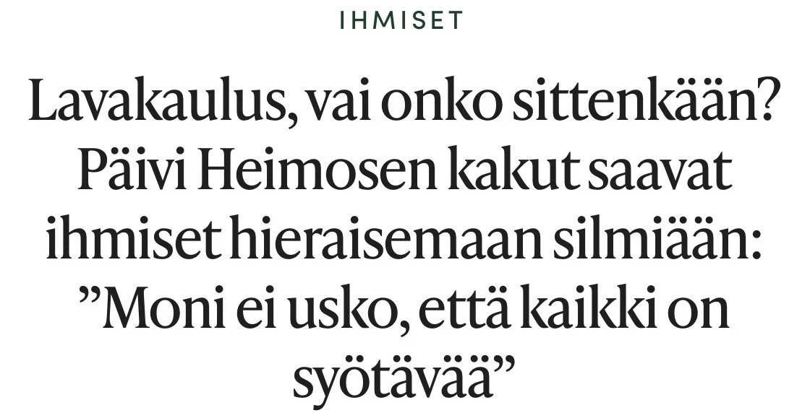

Hei!
Olen Päivi, espoolainen harrastelijaleipuri. Intohimonani on erikoiskakut. Tarkemmin sanottuna kakut, jotka näyttävät joltain muulta kuin perinteiseltä kakulta. Erikoiskakkujen lisäksi leivon jonkin verran myös muita leivonnaisia, esim. hyydykekakut ja koristellut focacciat kuuluvat suosikkeihini.
Kakkuinnostukseni alkoi vuonna 2012, kun poikani Joona toivoi 7v syntymäpäivilleen jalkapalloaiheista kakkua. Tämän jälkeen sain joka vuosi uuden kakkuhaasteen: aarrearkku, Lego, jalkapallokengät, hampurilainen, pizza, sulkapallomaila jne. Vietimme Joonan syntymäpäiviä usein kolmessa osassa, jolloin sain hyvän syyn tehdä kolme erilaista kakkua. Tästä muotoutuikin ns. ”kakkutrilogiat” eli kolmen kakun sarjat samalla teemalla. Trilogiakakkuja olen tehnyt karkki-, peli- ja herkkuruoka-teemalla. Näiden syntymäpäiväkakkujen lisäksi kakkuja on tullut vuosien saatossa tehtyä eri teemoilla ja aihepiireillä jos jonkinmoisiin kissanristiäisiin, kirjaimellisesti.
Leivontaoppini olen alun perin saanut äidiltäni. Äiti leipoi perheemme kaikki leivät ja pullat käyttäen niissä myös kotitilan jyvistä jauhettuja jauhoja. Äidin leivonta repertuaariin kuului niin ruisleivät, hiivaleivät, rieskat, sämpylät, pasteijat, pullat, tortut, piirakat, piparit, pikkuleivät, kuivakakut kuin perinteiset kermatäytekakutkin. Oma leivontarepertuaarini on paljon rajoittuneempi ja erityisesti leivän leivonnan osalta en yllä likimainkaan äitini tasolle.
Sana ”kakkulaari” liittyy tähän historiaan ja on kunnianosoitus äitini leivontaopeille ja -taidoille sekä äidin leivonnassa käyttämille jauhoille.
Wikipedia:
kakku on leivonnainen, joka tehdään useimmiten sokerista, kananmunista, jauhoista ja leivinjauheesta valmistetusta taikinasta.
laari on seinämillä muusta tilasta erotettu juuresten, viljan tai muiden maataloustuotteiden varastointipaikka.
Pidän kakkujen leivonnassa erityisesti suunnittelemisesta. Ensimmäisenä ideoin tilanteeseen sopivan aiheen, jonka ympäriltä lähden pohtimaan eri vaihtoehtoja sekä mahdollisia toteutustapoja. Tähän osuuteen käytän yleensä paljon aikaa etsien vinkkejä niin erilaisilta leivontasivustoilta kuin Googlen ihmeellisestä maailmasta. Tässä vaiheessa tulee usein pohdittua omista kaapeista löytyviä välineitä ja tarvikkeita ja niiden hyödyntämistä halutun lopputuloksen aikaansaamiseksi.
On erityisen mielenkiintoista miettiä miten jonkin asian saa näyttämään joltain, esim. miten sokerimassan saa näyttämään puulta, lasilta, kiveltä tai kankaalta. Kaikkeen ei suinkaan tarvitse hankkia valmiita erikoisvälineitä leivontatarvikekaupasta. Tarvitaan vain hieman kekseliäisyyttä ja luovaa hulluutta. Esimerkiksi puukuviosapluunan saa tehtyä narusta ja tuorekelmusta.
Olipa suunnitelma miten hyvä tahansa, niin toteutusvaiheessa sitä joutuu lähes aina muuttamaan lennossa suuntaan tai toiseen. Siksi varaudun yleensä valmiiksi muutamaankin vaihtoehtoiseen toteutustapaan. Lopputulos ja toteutus vastaa siis harvoin täysin alkuperäistä suunnitelmaa. Juuri tämä tekeekin kakun teosta kiehtovaa, koska oman luovuuden käyttämiselle ei ole ylärajaa ja lopputulos saattaa yllättää minut itsenikin.
Kakkuiluni saamat huomioinnit
Kinuskikissan kesäkakkukilpailussa pääsin jaetulle ensimmäiselle sijalle Mansikkakiulukakulla vuonna 2013.
Joonan syntymäpäiväkakkutrilogiasta julkaistiin juttu MTV-uutissivustolla vuonna 2020.
Maku-lehti julkaisi jutun kakkuilustani. Juttu julkaistiin 6/2023 Maku-lehdessä ja meilläkotona-sivustolla.
Myös tälle kakkulaari-sivustolle sain alkukimmokkeen Joonalta, joka halusi harjoitella nettisivujen tekemistä koodaamalla. Tämä on ollut yhteinen projektimme, joka on ollut hyvin antoisa ja opettavainen meille molemmille! Tässä projektissa Joona oli vastuussa toteutuksesta.
Sekä kakkuharrastukseni että tämän kakkulaari-sivuston syntyminen on siis Joonan ansiota.
Kiitos Joona! ❤️